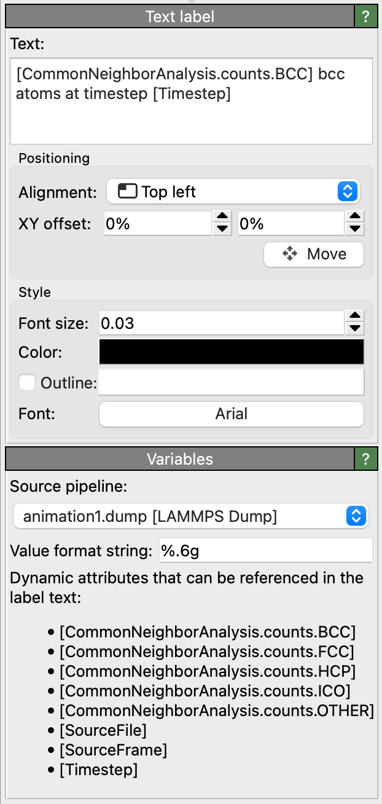

Text label layer
{kind=link}
Add this viewport layer to a viewport to display text or other information on top of the three-dimensional scene. The label’s text may contain placeholders, which get replaced with the current values of global attributes dynamically computed in OVITO’s data pipeline. This makes it possible to include dynamic data such as the current simulation time, the number of atoms, or numeric results in rendered images or movies.
HTML text formatting
You can include HTML markup elements and Cascading Style Sheet (CSS) attributes in the text to format individual words or characters. OVITO supports a subset of the HTML standard, which is documented here. The following table gives a few examples of HTML markup elements and the rendered output they produce:
Markup text |
Formatted output |
|---|---|
nm<sup>3</sup> |
nm3 |
e<sub>z</sub> |
ez |
First line<br>Second line |
First line |
Some <i>italic</i> text |
Some italic text |
Some <span style="text-decoration: underline">underlined</span> text |
Some underlined text |
[1<span style="text-decoration: overline">1</span>2] |
\([1\bar{1}2]\) |
Including computed values in the text
The text label has access to the list of global attributes provided by the
selected pipeline. Attributes are variables containing numeric values or text strings
loaded from the simulation file or dynamically computed by modifiers in the data pipeline.
You can incorporate attribute values in the label’s text by inserting placeholders of the form [attribute_name].
Whenever a placeholder references an attribute with a numeric value, the floating-point value
gets formatted according to the specified Value format string. You have the choice between decimal notation (%f), exponential notation (%e),
and an automatic mode (%g). Furthermore, the format string gives you control of the output precision, i.e., the number of decimal places that
appear after the decimal point. Use %.2f, for example, to always show two digits after the decimal point.
The format string must follow the standard convention of the printf() C function.
Defining new attributes
Attributes computed by the data pipeline may not always have the desired
format, units, or normalization for using them directly in a text label. For instance,
the CommonNeighborAnalysis.counts.BCC attribute calculated by the
Common neighbor analysis modifier
counts the total number of bcc atoms in the system. But what if you would rather
like to print the fraction of bcc atoms, not the absolute count?
In such situations, some kind of conversion and/or transformation of the attribute’s value is required,
and you will have to define a new attribute that derives its value from the original attribute.
This can be accomplished by inserting a Python script modifier into the data pipeline. This modifier executes a simple, user-defined Python function that computes the value of our new attribute based on the existing attributes(s):
def modify(frame, data):
bcc_count = data.attributes['CommonNeighborAnalysis.counts.BCC']
data.attributes['bcc_fraction'] = bcc_count / data.particles.count
In this example, we access the existing attribute CommonNeighborAnalysis.counts.BCC (the atom count) and
convert it into a fraction by dividing by the total number of atoms. The new value is output
as a new attribute named bcc_fraction, making it available for inclusion in the text label layer.
See also
ovito.vis.TextLabelOverlay (Python API)